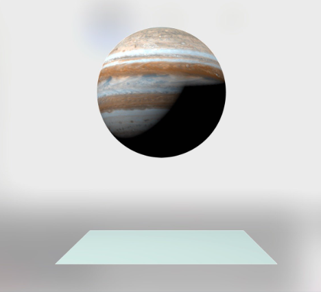

Team Members: Zhenbang (Roger) Yu, Hanze (David) Tan, Jerry Li, Angel Aldaco
Two Weeks into our project our major completed tasks inculde rendering a static model Juipter in a fixed rotation. This is accomplished starting with the ray tracing homework as that was deemed to be an apprioprate starting point for the project given we were dealing with how light interacts with the model. So we made a Collada model of a sphere and placed it for rendering. After we accomplished that we placed a static texture on the sphere to represent juipter, and placed a light source to see how it interacts with the light there, as a major idea for our project was interacting with the sun. We can also apply rotation to the sphere over time. The following image is reflecting that progress.
Progress thus far has been as we expected. Which is great because it indicates that we are running on schedule. So we currently have no plans to change the plan moving forward given that we have met our original goals. So this week we plan to move ahead with simulating weather! But we acknowedge that this is probably a harder task than the previous tasks. So we are carefully optimistic for our progress into the future deliverables with regards to timing. But given we have been able to keep up thus far, and given that we expect to dedicate more time to this coming forward we are hopeful to accomplish one of the reach goals such as self rotation.